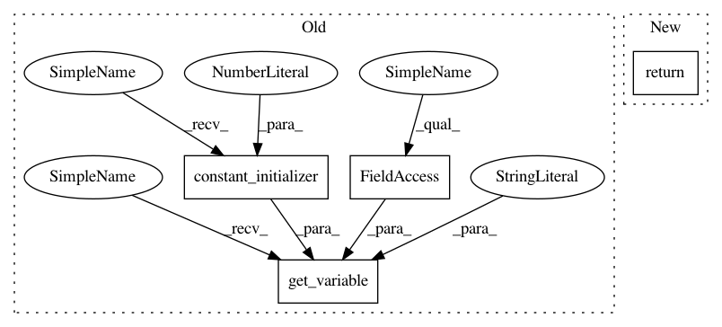

f8b0067f803286953f124c83d2a4e9ba4bd63a32,object_detection/exporter_test.py,FakeModel,preprocess,#FakeModel#Any#,29
Before Change
def preprocess(self, inputs):
return (tf.identity(inputs) *
tf.get_variable("dummy", shape=(),
initializer=tf.constant_initializer(2),
dtype=tf.float32))
def predict(self, preprocessed_inputs):
return {"image": tf.identity(preprocessed_inputs)}
After Change
self._add_detection_masks = add_detection_masks
def preprocess(self, inputs):
return tf.identity(inputs)
def predict(self, preprocessed_inputs):
return {"image": tf.layers.conv2d(preprocessed_inputs, 3, 1)}
In pattern: SUPERPATTERN
Frequency: 3
Non-data size: 4
Instances
Project Name: tensorflow/models
Commit Name: f8b0067f803286953f124c83d2a4e9ba4bd63a32
Time: 2017-06-27
Author: rathodv@google.com
File Name: object_detection/exporter_test.py
Class Name: FakeModel
Method Name: preprocess
Project Name: arnomoonens/yarll
Commit Name: 7a75d0817b258afaab5cf0cf3c144a5957cebffe
Time: 2018-01-23
Author: x-006@hotmail.com
File Name: agents/a3c.py
Class Name: A3CDiscreteCNNRNN
Method Name: build_networks
Project Name: tensorflow/models
Commit Name: f33ffcc224fe6549bc2c10cf3597b702459d64fc
Time: 2017-06-27
Author: rathodv@google.com
File Name: object_detection/exporter_test.py
Class Name: FakeModel
Method Name: preprocess